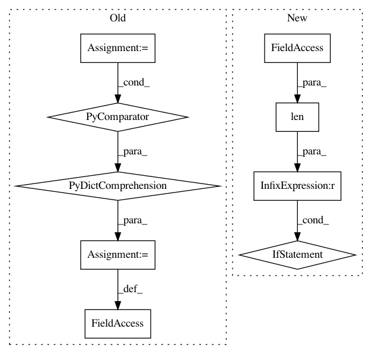

03b0e7061cf477fbeccb9c128ee76603df582d86,scripts/word_embeddings/evaluate_pretrained.py,,,#,159
Before Change
"Not implemented for binary fastText model.")
size = min(len(token_embedding._idx_to_token), args_.max_vocab_size)
token_embedding._idx_to_token = token_embedding._idx_to_token[:size]
token_embedding._idx_to_vec = token_embedding._idx_to_vec[:size]
token_embedding._token_to_idx = {
token: idx
for idx, token in enumerate(token_embedding._idx_to_token)
}
similarity_results = evaluation.evaluate_similarity(
args_, token_embedding, ctx, logfile=os.path.join(
args_.logdir, "similarity{}.tsv".format(name)))
After Change
if t in token_embedding_.unknown_lookup
]]
if len(token_embedding_.idx_to_token) > args_.max_vocab_size:
logging.warning("Computing embeddings for OOV words that occur "
"in the evaluation dataset lead to having "
"more words than --max-vocab-size. "
"Have %s words (--max-vocab-size %s)",
len(token_embedding_.idx_to_token),
args_.max_vocab_size)
similarity_results = evaluation.evaluate_similarity(
args_, token_embedding_, ctx, logfile=os.path.join(
args_.logdir, "similarity{}.tsv".format(name)))
analogy_results = evaluation.evaluate_analogy(
In pattern: SUPERPATTERN
Frequency: 3
Non-data size: 9
Instances
Project Name: dmlc/gluon-nlp
Commit Name: 03b0e7061cf477fbeccb9c128ee76603df582d86
Time: 2018-09-04
Author: leonard@lausen.nl
File Name: scripts/word_embeddings/evaluate_pretrained.py
Class Name:
Method Name:
Project Name: NifTK/NiftyNet
Commit Name: acddf04b125d567e3d1954d26f6b4c2042e50e52
Time: 2019-07-03
Author: carole.sudre@kcl.ac.uk
File Name: niftynet/io/image_sets_partitioner.py
Class Name: ImageSetsPartitioner
Method Name: initialise
Project Name: NifTK/NiftyNet
Commit Name: 1ef746a1b78c3964a317adf6511279ab106fcb87
Time: 2019-06-05
Author: carole.sudre@kcl.ac.uk
File Name: niftynet/io/image_sets_partitioner.py
Class Name: ImageSetsPartitioner
Method Name: initialise